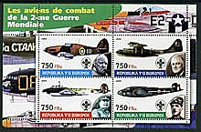
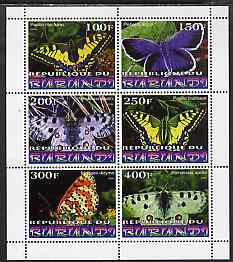
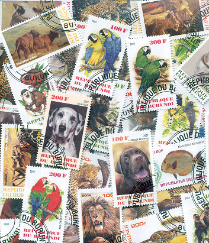
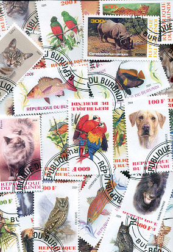
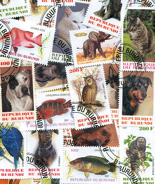
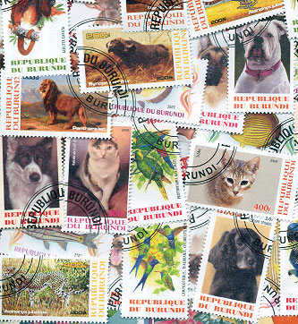

THE DECAY OF THE WADP NUMBERING SYSTEM?
ARE WE WITNESSING THE DECAY OF THE
WADP NUMBERING SYSTEM?
By Victor Manta, PWO, AIJP
Foreword
The World Association for the Development of Philately (WADP) initiated the WNS (WADP Numbering System), which was implemented and launched on January 1, 2002 by the Universal Postal Union (UPU). This numbering system was supposed to be the foundation for an online database of all stamps issued worldwide lawfully, and its goal was to fight against the large-scale manufacture and sale of illegal stamps.
The Philatelic Webmasters Organization (PWO), a non-profit organization located in Switzerland that currently numbers 350 members worldwide, was created to promote, support, and develop philately through philatelic webmastering. From its very beginnings, the PWO has closely collaborated with the UPU in the fight against illegal stamps. The PWO site, http://www.pwmo.org, has regularly published information about illegal stamp issues.

WNS Today
I visited the WNS site a few weeks ago and I was particularly intrigued by a piece of information that I found on the Participation Agencies page .
Under the Aland Islands (AX) registrations table I found the unusual entry: “Registration stopped by Posten Aland ”. I then checked the whole list and I found the same entry for the postal administration (PA) of Belgium . Shortly after that this entry also appeared for the PA of Finland .

These occurrences seemed very unusual to me, so I contacted by e-mail Ms. Anita Häggblom, Director of Philately of the Aland Islands and Chairperson of the Stamps and Philately Working Group of the PostEurop organization. I asked her some questions about:
• The reasons to stop the registration of Aland stamps with the WNS
• The WNS's role in fighting the illegal stamps and its results
• The contribution of WADP to the fight against the illegal stamps
In Appendix 1 I include the very interesting answers that I received, for which I would like to express my deep gratitude to Ms. Anita Häggblom.

Comments and considerations
The feedback from Ms. Anita Häggblom is a very positive example of an excellent collaboration of postal administrations with the philatelic press.
From Appendix 1 we learn that there is another country that quit the WNS system: Iceland . That makes 4 of them already and justifies the title of this article.
We learn from Ms. Anita Häggblom the reasons for withdrawal from the WNS:
“Some years ago it became very clear for me that it was impossible to get the system to work properly. There were administrations refusing to join the system and administrations which did not send their stamps or did not pay their bills according to the agreements. So already in 2011 I raised questions about the goal of the system”.
Please note that one year earlier, in 2010, on the PWO site we published the article “What is WNS Good For?” in which we concluded:
“Because the WNS does not cover all legal stamp issues, has not reached a useful degree of completeness in nine years, has a low site usage, is not useful for future developments, does not help developing countries, has not reduced the number of illegal stamps in commerce, has not achieved its main goal (that of helping stamp collectors sort out illegal stamps), and has high costs that are not reflected in its results, the failed WNS should either be reconceptualized from the ground up or eliminated." Source

It wasn't reconceptualized and because of this we begin to see the consequences. Please note that the simple addition of links to sites of some philatelic agencies is not a bad idea but it doesn't justify the existence of the WNS.
We won't comment on Ms. Anita Häggblom's many other observations, which are full of good sense. We'll leave that to our readers, and we will concentrate our attention only on one of them:
“According to me, the only way to fight against illegals is information about them to the WADP members and the whole trade. To have people tracking the illegals, unethical stamps and cinderellas on the Internet, by dealers, in exhibitions and so on. The information should be spread rapidly through Internet/e-mail.” (Appendix 1.)
More than true and this leads us to the recent UPU IB Circulars and to their role in spreading information. In the one and only Circular that is related to illegal stamps (no. 62 issued in 2013, which you'll find in Appendix 2), we observe that we get no information that would allow us to identify the stamps that are denounced by the Tanzanian PA. Even more, the circular explicitly calls for the ban on dissemination of information on those stamps. Certainly this particular PA is not to blame for this meaningless policy; instead it is the philatelic-related staff of the UPU that shows a total disregard to its own circulars.
To underline the gap between the goals of the WADP and the reality, we publish in the Appendix 3, with comments, an excerpt of its Plan for the Development of Philately for the cycle 2013-2016.
Conclusions
The three postal administrations that already withdrew hurt the WNS as we know it. From Ms. Anita Häggblom we just learned that “there are others considering the same." The time has finally come for the WADP, and especially for the UPU, to undertake something really useful. Until that occurs, the proliferation of illegal stamps will evolve unhindered.
New York City, USA. April 2014.
Note: All images on this page were shown by Mr. Dima Siméon from the Burundi PA at the international conference in Tunis , May 18 - 19, 2010, entitled "The Future of the Postal Stamp."

APPENDIX 1
From: Ms. Anita Häggblom
Director of Philately of the Aland Islands, Chairperson of the Stamps and Philately Working Group of the PostEurop organization
Date: 4/1/2014Åland became a member of WNS from the day one and have during the years supported the system actively. Some years ago it became very clear to me that it was impossible to get the system to work. There were administrations refusing to join the system and administrations which did not send their stamps or did not pay their bills according to the agreements. So already in 2011 I raised questions about the goal of the system.
The fight against illegals was a noble task but, the system not being complete, the original goal was not possible to reach.
So what could be a goal for the future WNS? Maybe, to have a complete list of stamps from the whole world in one place, that could be one goal. But their list is only since 2002. There are catalogues that offer the same from the beginning of the history of stamps. If not yet, very soon all these catalogues will be online, and there will be no extra postal charges for that.
One other important question we have to raise is “Are collectors aware of the system and really using it”? When asking this question among collectors and dealers, they are not aware of such a system and the purpose of it. There should be a lot of marketing done to get it known among the trade. Today the site has approximately 18 000 visitors per month. But bearing in mind how many collectors there are in the world, there should be 10 or 100 time more visitors.
And bearing in today's times where every single euro and cent counts, we have to start looking for where to cut the costs. When asking the inevitable question, “What is there for me, do I gain something from the system”? The answer was quite simple to tell.
As far as I know it is Åland , Belgium , Finland and Iceland who have stopped the membership, but there are even others considering the same.
As to your question about WADP and its contribution to the fight against illegals, (my private opinion) I should say the input is limited.
According to me, the only way to fight against illegals is information about them to the WADP members and the whole trade. To have people tracking the illegals, unethical stamps and cinderellas on the Internet, by dealers, in exhibitions and so on. The information should be spread rapidly through Internet/e-mail.
Hopefully these comments help you with the article.

APPENDIX 2
Tanzania (United Rep.) – Illegal postage stamps 2013
International Bureau Circular no. 62
(excerpt)Berne , 6 May 2013
"Tanzania Posts Corporation asks UPU member countries and their designated operators, the World Association for the Development of Philately (WADP), and all other stakeholders to refuse to disseminate any such stamps, information or items in the market.”
K.J.S. McKeown
Director of Markets Development
SourceAPPENDIX 3
"WADP: Philately development plans for the cycle 2013–2016 etc.
Although the number of members today represents 83% of all possible members, we can hope to reach 200 members by the end of the Doha cycle." Source (protected area)
Launched in 2002 the WNS had 195 members at the end of 2012." Source
Although these data are rather convoluted, they allow us to compute, by linear extrapolation, which are the plans of WADP.
The maximum possible number of members of WNS is 235. In the current 4-year cycle it is expected that this number will increase by 5 members. Taking into account the 4 members lost in the beginning of 2014, the goal to bring together all existing operators into the WNS will be reached in 40 years, that is, in the year 2056.
Links to related articles appeared on this site:
- WNS Circulars are not reliable
- WADP, WNS and the Illegal Postal Stamps. Balance Sheet Ten Years Later
- What is WNS Good For?
- No Help from the UPU
- Nigerian Stamp Sentinel
- Ten Lost WNS Years
|